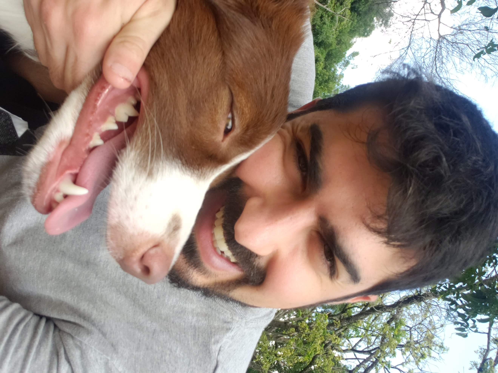

Lucas Di Ruzza Salles

Sobre Mim
Cursei Medicina Veterinária na Universidade de São Paulo (FMVZ/USP) e acabei empreendendo no mercado pet.
Após quatro anos como sócio proprietário de um daycare para cães eu me tornei autônomo franqueado de uma empresa de adestramento canino.
Sempre fui apaixonado por tecnologia, por isso fiz diversos cursos na área, desenvolvendo meu próprio site e aplicativo, além de outras ferramentas.
Recentemente decidi fazer a transição completa de carreira, por me identificar com a área.
Educação
- Medicina Veterinária - Universidade de São Paulo (2008-2014)
- The Complete Full-Stack Web Development Bootcamp - App Brewery (2025)
Experiência Profissional
Gerente Administrativo
Dog Palace Hotel, 2012 - 2015
- Resolução de problemas e otimização de processos.
- Captação e atendimento ao cliente.
- Seleção e treinamento de colaboradores.
- Seleção e treinamento de cães.
Adestrador Franqueado
Tudo de Cão, 2015 - 2018
- Captação e atendimento ao cliente.
- Comunição colaborativa entre a equipe de adetradores.
- Adestramento de cães com diversos objetivos.
Adestrador Autônomo
Clicker Ensina, 2018 - Presente
- Gerenciamento eficaz de tempo para preparar cães e tutores a cumprir seus objetivos.
- Adestramento de cães para participação em cerimônias de casamento.
Habilidades Técnicas
Idiomas
Inglês Avançado
Outros